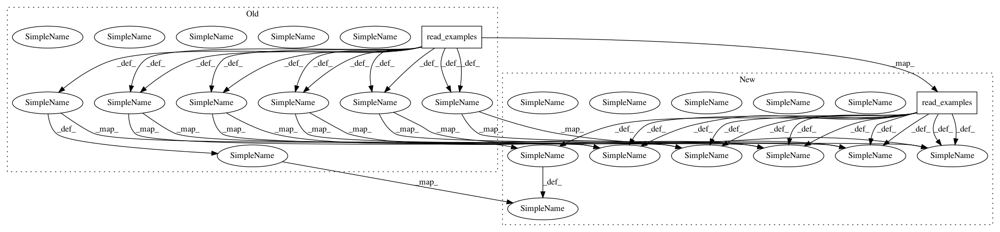

e3e937cc41ed031d7971947d17f359a562414168,extract_features.py,,main,#,307
Before Change
tokenizer = tokenization.FullTokenizer(
vocab_file=FLAGS.vocab_file, do_lower_case=FLAGS.do_lower_case)
examples = read_examples(FLAGS.input_file)
features = convert_examples_to_features(
examples=examples, seq_length=FLAGS.max_seq_length, tokenizer=tokenizer)
unique_id_to_feature = {}
for feature in features:
unique_id_to_feature[feature.unique_id] = feature
model_fn = model_fn_builder(
bert_config=bert_config,
init_checkpoint=FLAGS.init_checkpoint,
layer_indexes=layer_indexes,
use_one_hot_embeddings=FLAGS.use_one_hot_embeddings)
estimator = Estimator(model_fn=model_fn)
input_fn = input_fn_builder(
features=features, seq_length=FLAGS.max_seq_length)
with codecs.getwriter("utf-8")(tf.gfile.Open(FLAGS.output_file,
"w")) as writer:
for result in estimator.predict(input_fn):
unique_id = int(result["unique_id"])
feature = unique_id_to_feature[unique_id]
output_json = collections.OrderedDict()
output_json["linex_index"] = unique_id
all_features = []
for (i, token) in enumerate(feature.tokens):
all_layers = []
for (j, layer_index) in enumerate(layer_indexes):
layer_output = result["layer_output_%d" % j]
layers = collections.OrderedDict()
layers["index"] = layer_index
layers["values"] = [
round(float(x), 6) for x in layer_output[i:(i + 1)].flat
]
all_layers.append(layers)
features = collections.OrderedDict()
After Change
bert_config = modeling.BertConfig.from_json_file(FLAGS.bert_config_file)
features = convert_examples_to_features(
examples=read_examples(FLAGS.input_file),
seq_length=FLAGS.max_seq_length,
tokenizer=tokenization.FullTokenizer(
vocab_file=FLAGS.vocab_file, do_lower_case=FLAGS.do_lower_case))
unique_id_to_feature = {f.unique_id: f for f in features}
model_fn = model_fn_builder(
bert_config=bert_config,
init_checkpoint=FLAGS.init_checkpoint,
layer_indexes=layer_indexes,
use_one_hot_embeddings=FLAGS.use_one_hot_embeddings)
estimator = Estimator(model_fn=model_fn)
input_fn = input_fn_builder(
features=features, seq_length=FLAGS.max_seq_length)
with codecs.getwriter("utf-8")(tf.gfile.Open(FLAGS.output_file,
"w")) as writer:
for result in estimator.predict(input_fn):
unique_id = int(result["unique_id"])
feature = unique_id_to_feature[unique_id]
output_json = collections.OrderedDict()
output_json["linex_index"] = unique_id
all_features = []
for (i, token) in enumerate(feature.tokens):
all_layers = []
for (j, layer_index) in enumerate(layer_indexes):
layer_output = result["layer_output_%d" % j]
layers = collections.OrderedDict()
layers["index"] = layer_index
layers["values"] = [
round(float(x), 6) for x in layer_output[i:(i + 1)].flat
]
all_layers.append(layers)
features = collections.OrderedDict()
In pattern: SUPERPATTERN
Frequency: 3
Non-data size: 2
Instances
Project Name: hanxiao/bert-as-service
Commit Name: e3e937cc41ed031d7971947d17f359a562414168
Time: 2018-11-08
Author: hanhxiao@tencent.com
File Name: extract_features.py
Class Name:
Method Name: main
Project Name: hanxiao/bert-as-service
Commit Name: 8fb4a9c6bdf17aad1e6e0ee89d05e3f792179965
Time: 2018-11-08
Author: hanhxiao@tencent.com
File Name: extract_features.py
Class Name:
Method Name: convert_lst_to_features
Project Name: hanxiao/bert-as-service
Commit Name: 5f5d6d1f30eb168d004ec7699ef8e9a2bf43bbe7
Time: 2018-12-13
Author: hanhxiao@tencent.com
File Name: server/bert_serving/server/bert/extract_features.py
Class Name:
Method Name: convert_lst_to_features